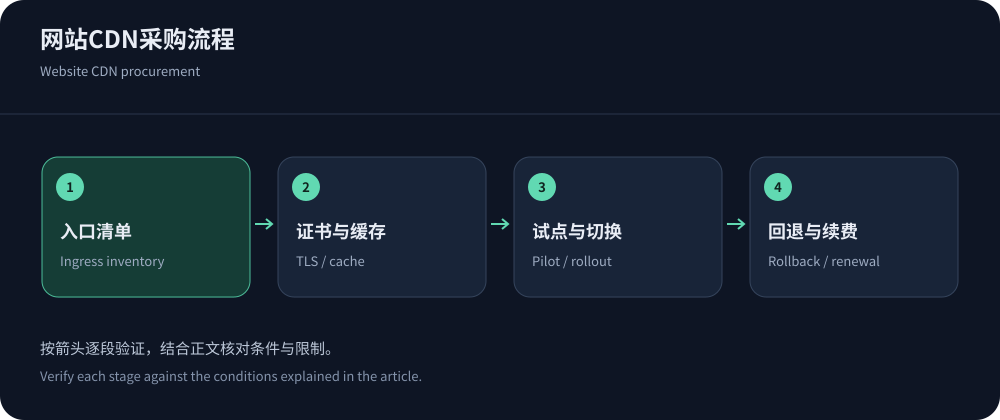
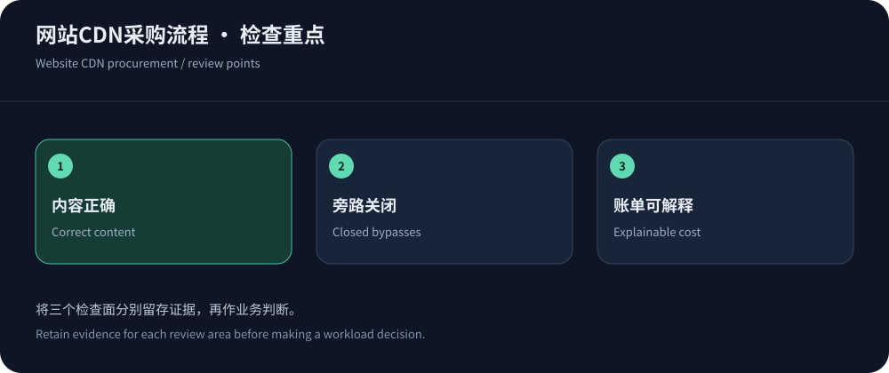

Start with an ingress inventory
Before buying, inventory domains, origins, ports, protocols, owners and purposes. Separate public assets, anonymous pages, identities, APIs, callbacks and administration. Forgotten entrances often cause migration failures.
Document audience, ordinary/peak traffic and failure impact. Consider CDN5 for relevant protection/offshore needs and cloud integration where applicable. Filter mandatory protocol/geography requirements before trials.
Make the quote match the workload
Request the same workload quote from all candidates, including base, regional delivery, requests, origin, security, logs and support. Verify allowances, units, tiers and exit terms. Refresh prices before purchase; reference information was checked on 14 October 2026.
CloudFront combines fixed and metered choices, while Cloudflare uses feature tiers. Apply the billing guide and retain unknown charges.


Validate TLS and origin access before switching
Both TLS legs need correct protocols, certificates and hostnames. Validate origin Host, port, health checks, errors and redirects; an incorrect Host can serve another site. Do not permanently disable origin certificate verification to hide errors.
Prepare trusted proxy identity and origin restrictions across IPv4/IPv6 while retaining secure administration. Assign address-update ownership and keep the old entrance protected during transition.
Begin with a few explicit cache rules
Follow RFC 9111, starting with versioned assets before public HTML. Keep identities, carts and payments out of unsafe shared caching. Simplify dimensions only after proving equivalence.
Use CloudFront key guidance as a conceptual reference and verify provider semantics. Test separate accounts, languages and versions, documenting why each rule exists.
Pilot acceptance includes failure paths
Test updates, errors and recovery, not just the homepage. Define expected results, evidence and failure actions with authorized environments and ordinary business samples.
| Scenario | Expected evidence | Failure investigation |
|---|---|---|
| Cache/update | Hits offload origin; updates and content checks remain correct. | Keys, headers, invalidation and cache layers. |
| Identity/transactions | Identity isolation and completed login/order/callbacks. | Identity headers, challenges, signatures and idempotency. |
| Errors/timeouts | Traceable errors and bounded retries without data mixups. | Origin logs, queues, timeouts and health checks. |
| Rollback/bypass | Protected fallback, denied bypass and usable administration. | Certificates, allowlists, old DNS and established sessions. |
Prepare a minimal reproducible support case
Create a public or redacted test path with expected content, conditions, time, network and request identifiers. Share diagnostic fields without private cookies, payments or tokens.
Ask support to explain a miss, origin error or policy match, then verify the proposed change. This exposes logging and support limitations before production incidents.
Preserve the sample with configuration notes and have another maintainer repeat it; undocumented console knowledge is not an operational handover.
Limit concurrent changes during migration
Migrate a low-risk domain or traffic slice with stable application/origin settings. Track timestamps, carriers, errors, business completion and origin work. TTL changes help later resolutions but do not flush every cache or move persistent sessions.
Avoid unrelated simultaneous migrations. Roll back to verified protected settings without uncontrolled refill. Identity or transaction faults require immediate containment, not more speed testing.


Review invoices and configuration drift before renewal
Reconcile invoices and usage with common units/timezones. Review idle resources, new endpoints, certificate renewal, proxy ranges and expired exceptions; drift often follows business changes.
Reassess fit using the provider comparison. Export records and revoke obsolete access at exit. Successful procurement leaves the team able to deploy, explain, maintain and reverse the service.